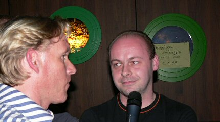

|
Forumavond "sfeer en beleving" |
Forumavond "sfeer en beleving"
Er was nauwelijks parkeerplaats bij de Kick Off. Wow,
zoveel mensen naar
de forumavond? Nee, een tuincentrum werd geopend. Maar bestaat er een
mooiere parkeerplaats dan onder een demonische Roda JC-lichtmast....?
Marcel Michiels verzorgt de aftrap bij de tweede forumavond die deze
keer
als thema "Sfeer en Beleving" heeft.
Eric van der Luer was spreekstalmeester. Achter de tafel enkele
FP- en
WSU-leden.
Kah en Cissé zijn de aanwezige spelers. Om beurten lezen ze de
V.O.K.
Maurice, voorzitter FP.
René, woordvoerder WSU.
Bart met aureool.
Het onderwerp leek niet echt aan te spreken en de discussie kwam
nauwelijks op gang.

Na enkele monologen toog Eric het publiek in. Deze juffrouw vroeg
zich af
waarom de Kick Off niet voor en tijdens de wedstrijd bereikbaar was.
Een zwaar geromantiseerde Kaalhei-gerefereerde column van Servé
Kuijer.

Er waren ongeveer 80 supporters aanwezig.
De RW-crew aan de "SBC"-tafel.... Janine maakt ijverig
aantekeningen en
meldt dat Roda te veel buitenlanders aantrekt waardoor de supporter zich
niet goed meer kan identificeren met de club.

Er was van tevoren afgesproken dat er niet over de nieuwe trainer
of over
FCDB gesproken zou worden, maar toch... Deze supporter (Ger) lijkt stiekem
een beetje op Huub. Dit moet een voorteken zijn....
Omdat we het niet over FCDB zouden hebben, welnu dit is de
Rodasupporter die gewond is geraakt bij FCDB-RJC. Hij bedankt eenieder
voor de steun die hij heeft mogen ontvangen. Verder had deze man bepaald
zinnige bijdragen die de kern van deze avond goed samenvatte: De beleving
komt in eerste instantie van het veld, van de spelers!
Links, een Baf getapt door een ervaren medewerker.
Rechts, een Baf getapt door Korenwolf :-)))
Na
het officiële gedeelte was het nog ruim anderhalf uur gezellig in de KO
met informele gesprekjes tussen Rodasupporters en bestuurslui. De opkomst
was matig. Hopelijk volgende keer MEER.